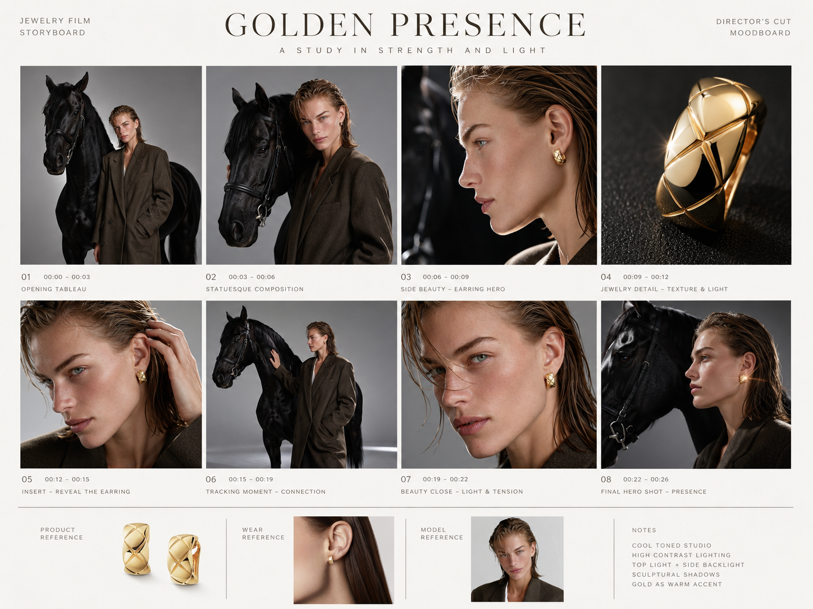
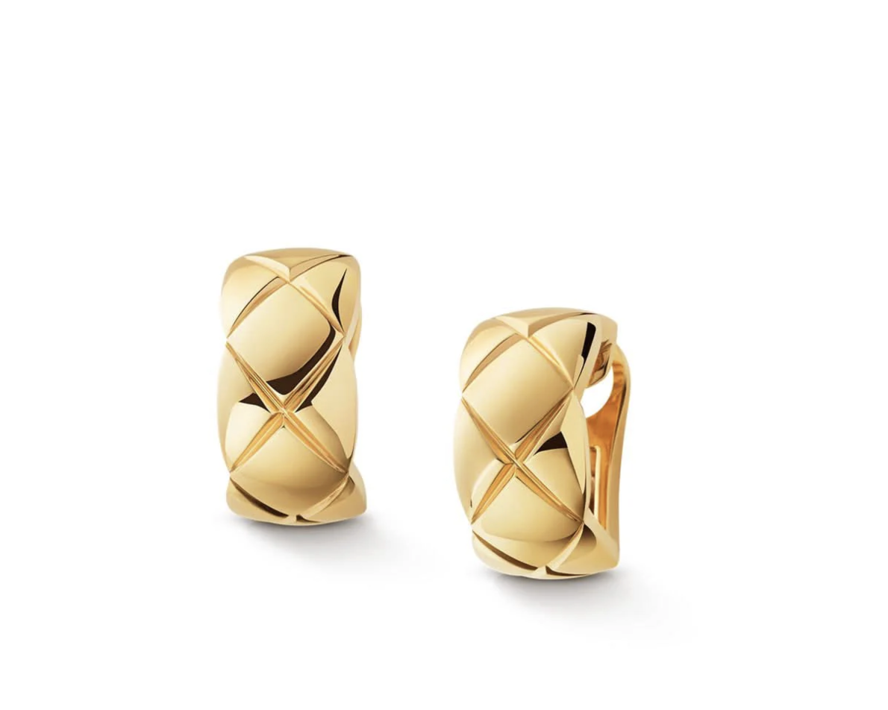
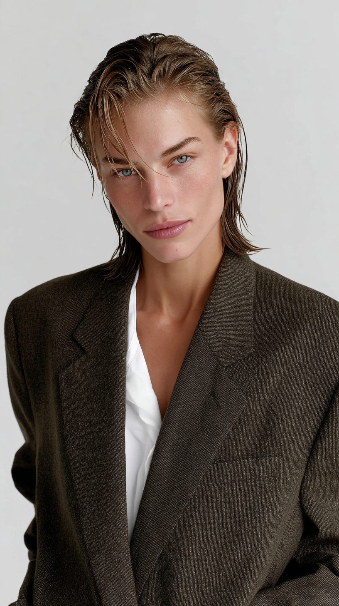
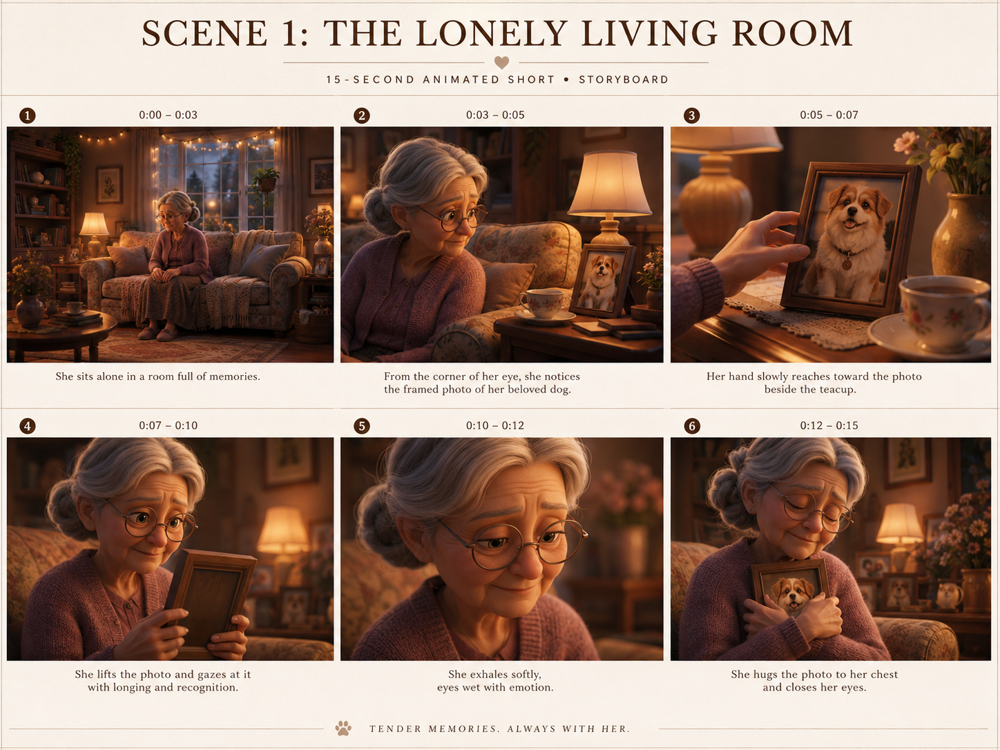
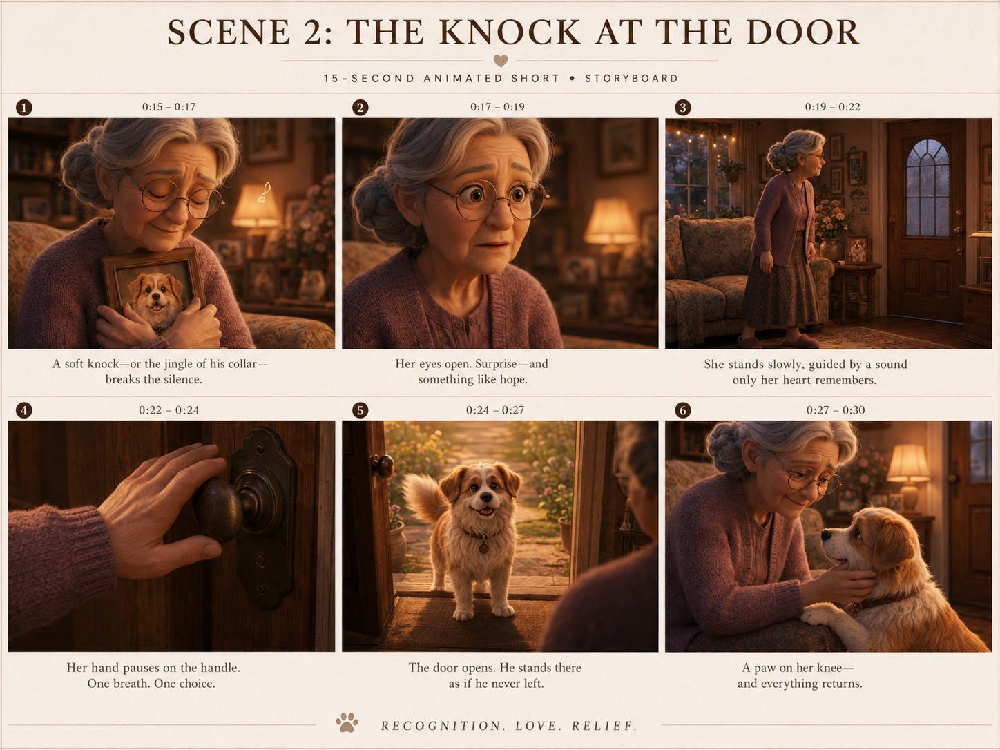
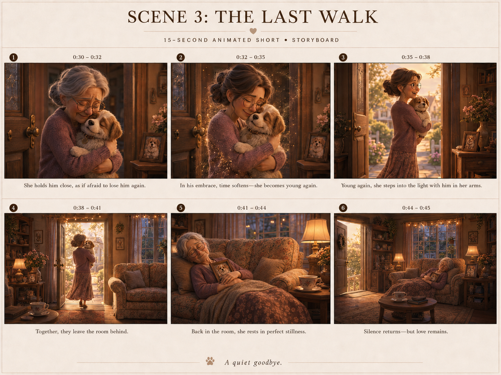

שיעור 5 — השבט · וידאו AI
Storyboard
to Prompt
איך מתכננים וידאו לפני שמבקשים מהמודל ליצור אותו.
איך מתכננים וידאו לפני שמבקשים מהמודל ליצור אותו.
סטוריבורד מפרק רעיון לרצף של פריימים: מה רואים, מה קורה, באיזה סדר, איפה המצלמה נמצאת, ואיך הרגש משתנה לאורך הזמן.
מודבורד מגדיר שפה. סטוריבורד מגדיר מה קורה בזמן.
אם לא מגדירים התחלה, שינוי וסוף, Seedance ממלא את הפערים לבד.
פחד, הפתעה, הקלה, חום. אלה לא מילים בפרומפט, אלא רגעים.
שוט פתיחה, שוט פעולה, שוט תגובה, שוט סיום. אחרת מקבלים קליפ יפה ומבולבל.
ב־Seedance הפרומפט הטוב ביותר מתנהג כמו סטוריבורד כתוב.
זה לא רק “ילד משחק כדורגל”. יש כאן רצף רגשי ברור: משחק לבד, נפילה, חשש, הפתעה, עזרה, הקלה, סיום חם.
עכשיו נפרק איך פרומפט כזה בנוי כמו סטוריבורד.
ילד משחק לבד. הכל נקי, חם ובטוח.
הוא נופל. הכדור מגיע לחבורה.
החבורה נראית מאיימת. הילד מצפה לצרות.
הנער מתכופף במקום להיות רע.
מרימים אותו, מנקים אבק, מחזירים כדור.
חיוך, הקלה, פרידה באור חם.
זה סטוריבורד: לא רשימת תמונות, אלא שינוי רגשי עם זמן.
לא צריך לקרוא את כולו עכשיו. מה שחשוב לראות הוא המבנה: קודם עולם ודמויות, ואז טיימליין לפי שניות.
אפשר להעתיק, להחליף רעיון, ולתת למודל לשמור על המבנה.
הפרומפט הטוב שומר על המודל בתוך המסלול.
כאן הוורקפלואו מתחיל ב־15 פריימים מתוכננים: מצלמה, סאונד, מוזיקה, דמויות, מוצר, תאורה ורצף.
הסטוריבורד הוא לא שלב יצירתי “נחמד”. הוא בקרת איכות לפני הכסף.
בונים גריד של 15 פריימים עם זוויות מצלמה, SFX, מוזיקה, תאורה, קאסט וסצנות.
בודקים רציפות, סדר שוטים, עקביות מוצר ודמויות, וכיוון מצלמה לפני Seedance.
מעתיקים את הסצנות לפרומפט, מוסיפים מה לא רוצים, ואז מתקנים בעריכה רק כשצריך.
Seedance לא צריך השראה. הוא צריך תוכנית צילום.
החלק הכי מקצועי בפרומפט הוא לפעמים ה־no.
בונים סטוריבורד, מחברים רפרנסים, כותבים פרומפט לפי הביטים, מייצרים וידאו, ואז חוזרים לבדוק מה נשבר: רצף, דמות, מצלמה, רגש או סגנון.
העבודה היא לא פרומפט אחד. העבודה היא לולאה.
כאן הסטוריבורד לא מתחיל מעלילה. הוא מתחיל משלושה דברים שחייבים להישאר עקביים: הדוגמנית, העגיל, והעולם האדיטוריאלי.



הווידאו מצליח כשהרפרנסים לא רק יפים, אלא מחזיקים תפקיד.
כשמשנים פורמט, לא רק “חותכים” את הווידאו. בודקים מחדש קומפוזיציה, מרחק מצלמה, מקום למוצר, ואיפה העין אמורה לנחות.
סטוריבורד טוב יכול לעבור פורמט, אבל צריך לבדוק מה משתנה בפריים.
כשיש מוצר, הסטוריבורד צריך לשרת גם סיפור וגם מכירה.
זו התוצאה הסופית. עכשיו חוזרים אחורה ורואים איך היא נבנתה: לא בפרומפט אחד ענק, אלא בשלושה חלקים, כשכל חלק נשען על סטוריבורד ותוצאה קודמת.
הדבר החשוב כאן הוא תהליך: תכנון, יצירה, המשך, שמירה על רציפות.

שימו לב כמה מעט “קורה”: היא יושבת, מבחינה בתמונה, מרימה אותה, מחבקת. אבל בגלל שהביטים ברורים, הווידאו יודע לאן ללכת.
סטוריבורד רגשי לא מחפש אקשן. הוא מחפש שינוי.

האם היא אותה אישה? אותו סלון? אותה תאורה? אותה תחושת זיכרון? ברגע שעובדים בחלקים, הרציפות הופכת למשימה בפני עצמה.
כל פרומפט חדש צריך להזכיר למודל את העולם שכבר נבנה.

כאן הסטוריבורד כבר לא רק מסדר שוטים. הוא שומר על המשמעות: טרנספורמציה, אור, יציאה מהחדר, ואז חזרה לרגע השקט על הספה.
ככל שהסצנה רגישה יותר, ככה הסטוריבורד צריך להיות ברור יותר.
לא עלילה גדולה. שינוי קטן: לבד → ביחד, פחד → הקלה, שקט → גילוי.
0-2, 2-4, 4-6. כל חלון זמן מקבל פעולה אחת ברורה.
Wide, close-up, tracking, dolly-in. המצלמה היא לא קישוט.
אם אי אפשר לחלק את זה לביטים, זה עדיין לא וידאו. זה רעיון.
הניסיון הראשון לא צריך להיות מושלם. הוא צריך להיות ניתן לאבחון.